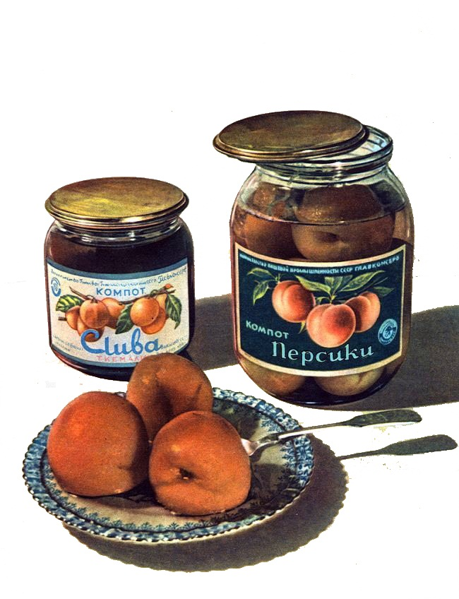

Компоты "СЛИВА" и "ПЕРСИКИ"
- ГОСТ Р 54680-2011. Консервы. Компоты. Общие технические условия
- Состав: Вода, сахар-песок, сухофрукты: слива, персик, лимонная кислота
- Цена: 58 руб.
Энергетический состав продукта
| Белки |
Жиры |
Углеводы |
Калорийность в 100 гр. |
| 0.12 |
0.05 |
8.88 |
88 Кл |